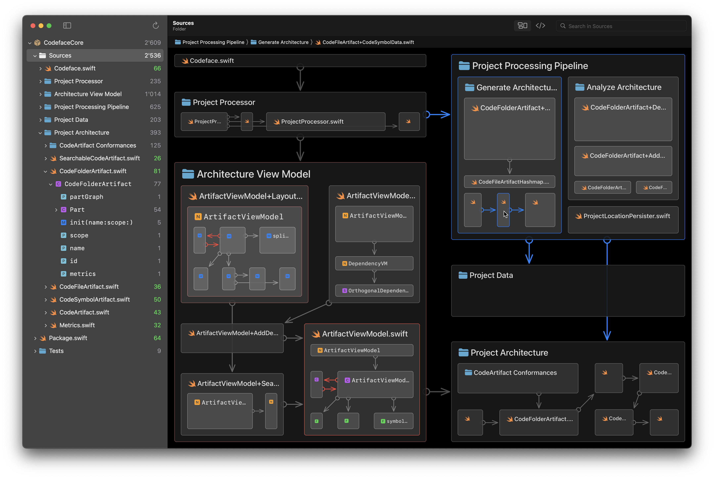
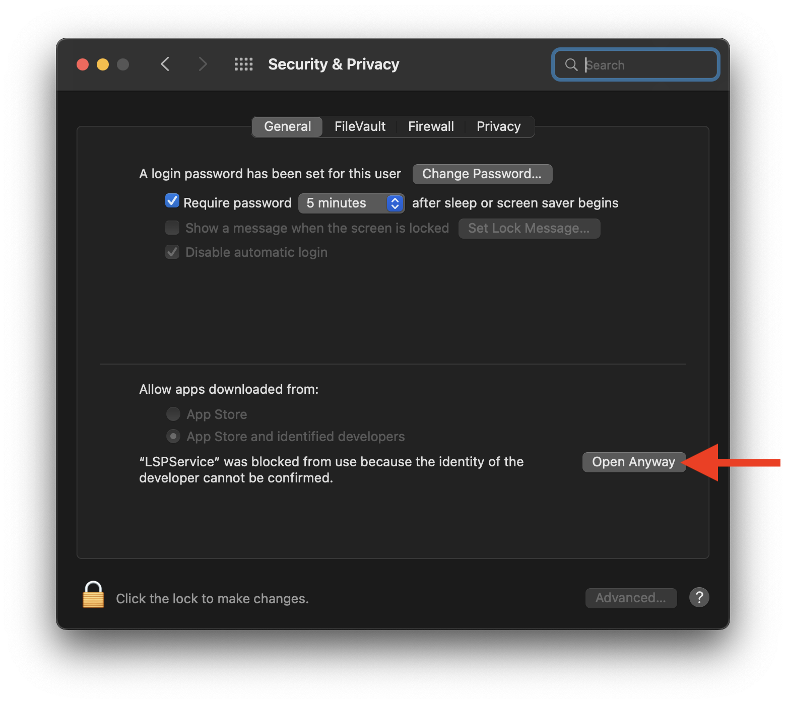

Setup LSPService so Codeface can use LSP Servers
July 26, 2022 • Sebastian Fichtner
LSPService is a free open source webservice that can provide
Codeface finer granularity and information about actual architecture:

For example, it allows
Codeface to show the symbols (like classes and functions) and dependencies in your code base.
Download and Run
Simply download LSPService and run it locally on your machine.
Codeface will automatically detect LSPService and talk to it.
On you first attempt to launch LSPService, you'll probably need to confirm that intention via the security settings:

LSPService will run in terminal, and as long as it's running there, the service is available. Check
http://localhost:8080.
Add Language Support
If Xcode is installed, LSPService automatically supports
Swift packages. Be aware that using LSPService and Codeface on Swift packages, you have to `swift build` your package from the console to update what LSPService and Codeface "can see". This is due to a
caveat of
Apple's LSP server, which is still at an early stage.
The same LSP server from Apple should also work for Objective-c, C++ and C (see below).
Generally, you must provide locations of
LSP servers for the languages you care about: LSPService creates an LSPServiceConfig.json file on launch if the file doesn't exist yet. If the file exists, LSPService loads server configurations from the file. The JSON structure is quite self-explanatory:
{
"swift" : {
"path" : "/usr/bin/xcrun",
"arguments" : [
"sourcekit-lsp"
],
"environment" : {
"SOURCEKIT_LOGGING" : "0"
}
}
}
Just add language server entries to the file and then restart LSPService. Arguments and environment may of course remain empty.
In the future, LSPService will help more with installing and locating LSP servers for common languages. Learn more (or even contribute)
on GitHub.